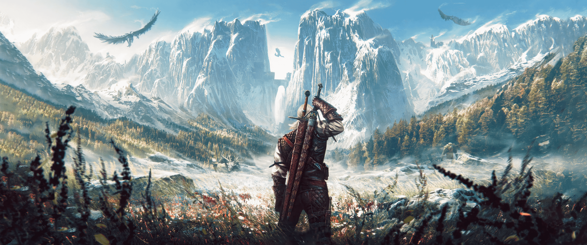
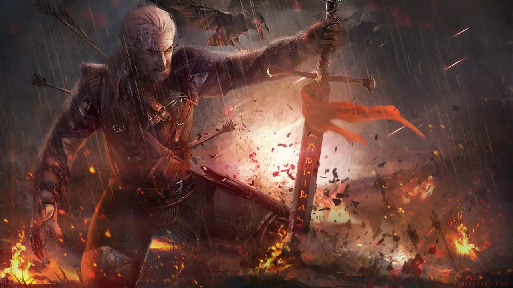

Zaklínači jsou speciálně vycvičení a mutovaní nájemní zabijáci monster, kteří byli stvořeni za účelem ochrany lidstva před nebezpečnými tvory. V dětství museli projít bolestivým procesem alchymistických mutací, známým jako Zkouška trav, který jim sice prořízl řady vrstevníků, ale přeživším daroval nadlidské reflexy, rychlost, sílu a schopnost vidět ve tmě. Pro svou práci jsou vybaveni dvěma meči - ocelovým na běžné protivníky a stříbrným na magické příšery - a také schopností využívat jednoduchou magii v podobě zaklínačských znamení. Před bitvou si své smysly a schopnosti dál zostřují pitím toxických elixírů, které by běžného člověka usmrtily. Každý z nich nosí medailon své zaklínačské školy, například s motivem vlka či kočky, který vibrováním varuje před blízkou magií nebo nebezpečím. Přestože o nich koluje mýtus, že vlivem mutací zcela ztratili lidské emoce, často prožívají složité vnitřní konflikty. V běžném světě se však potýkají s předsudky a opovržením ze strany lidí, kteří je vnímají jako bezcitné mutanty, a ačkoliv kodex zaklínačům ukládá přísnou politickou neutralitu, v realitě plné intrik je pro ně téměř nemožné se do konfliktů nezaplést.
